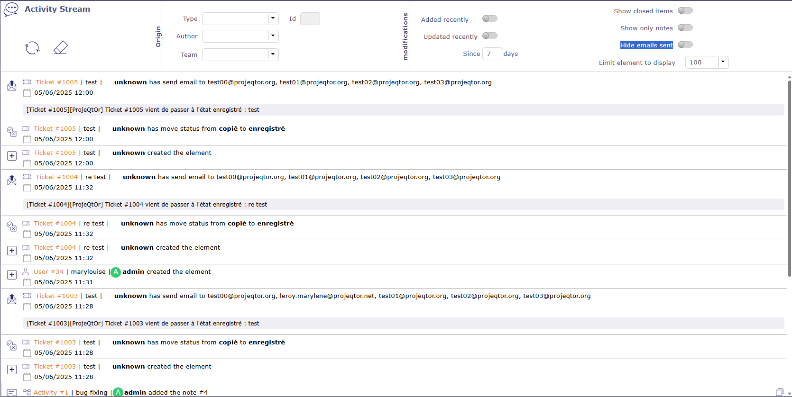
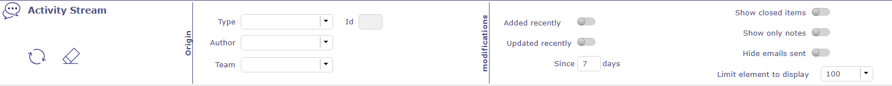
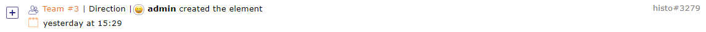
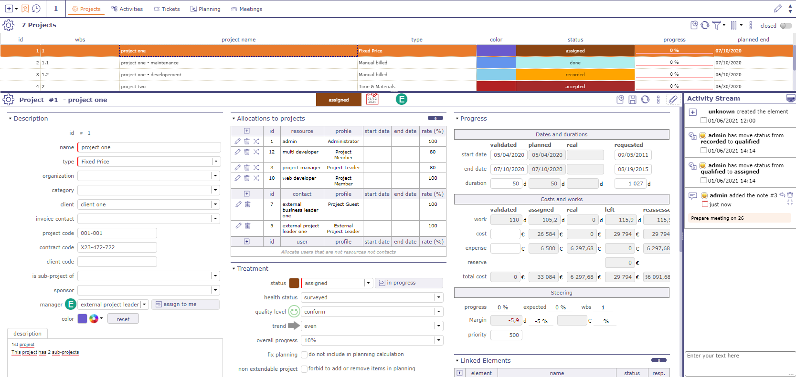
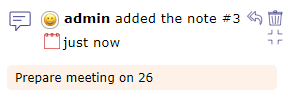

Flux d’Activité¶
Le flux d’Activité vous permet d’afficher certaines informations sur chacun des éléments de ProjeQtOr.
Il s’agit d’une sorte d’historique allégé qui vous permet de voir rapidement les informations de création, de suppression, de changements d’état de l’élément ou les commentaires laissés par les utilisateurs selon leurs droits de visibilité.

Zone de liste des Tâches v9¶
L’écran dédié au flux d’Activité vous permet de visualiser tous les flux.
Système de filtre¶

Système de filtre¶
Ce filtre vous permet de restreindre l’affichage par…
Type d’élément
Son identifiant
Auteur
Équipe
Périodes
Afficher les éléments fermés
Afficher uniquement les notes
Masquer les e-mails envoyés
Vous pouvez également sélectionner la quantité d’informations à afficher et restreindre la liste à l’écran.
Éléments affichés¶
Nous pouvons voir dans ce résumé plusieurs éléments :
L’élément et son identifiant
Le nom donné à cet élément
L’auteur de la modification
L’opération qui a été effectuée
La date et l’heure de la modification
Les notes éventuelles relatives à l’élément
Les e-mails envoyés pour l’élément avec l’objet et le texte du message.

Ligne du flux d’Activité¶
Les éléments impactés sont tous cliquables.
Notes¶
Dans le cas des notes, le commentaire est affiché seul.
Vous pouvez afficher les notes en mode discussion si vous filtrez l’écran du flux d’Activité par auteur.
Cela vous permet de remonter l’intégralité d’une discussion.
Flux d’Activité sur l’écran d’un élément¶
Vous pouvez visualiser le flux d’Activité de chaque élément sur l’écran de ce dernier.

Flux d’Activité sur l’écran d’un élément Projet¶
Les éléments affichés dépendent de vos droits de visibilité.
Cliquez sur
 dans les outils de la zone de détails pour afficher la zone du flux d’Activité.
dans les outils de la zone de détails pour afficher la zone du flux d’Activité.Cliquez sur pour choisir l’emplacement de la zone à gauche de la page
Cliquez sur pour choisir l’emplacement de la zone en bas de la page
Informations du flux d’Activité¶

Détails du flux d’Activité¶
Dans la zone du flux d’Activité, vous pouvez visualiser les mêmes informations que sur l’écran dédié.
L’auteur de l’information relayée avec son icône de Profil
Le type d’information affiché : création, suppression, changement d’état ou commentaires
La date et l’heure de la modification
Type d’information¶

{kind=link}
{kind=link}
{kind=link}
{kind=link}
{kind=link}
{kind=link}
Ajouter une note¶
Vous pouvez ajouter une note simplement en cliquant dans la zone de texte en bas de la zone du flux d’Activité.
Par défaut, votre note est visible par tous les utilisateurs assignés au projet lié à l’élément.
Cliquez sur
 pour la partager en public (équipe projet : Ressources affectées au projet)
pour la partager en public (équipe projet : Ressources affectées au projet)Cliquez sur
 pour partager la note uniquement avec votre équipe
pour partager la note uniquement avec votre équipe
{kind=link}
De même, il est possible de visualiser les notes directement en utilisant les boutons suivants
Cliquez sur
 pour masquer le commentaire de la note.
pour masquer le commentaire de la note.Cliquez sur
 pour afficher le commentaire de la note.
pour afficher le commentaire de la note.
Par défaut, vous verrez toutes les notes visibles pour chaque élément.
Cliquez sur Afficher uniquement les notes dans le flux d’Activité pour afficher uniquement les informations de type notes.